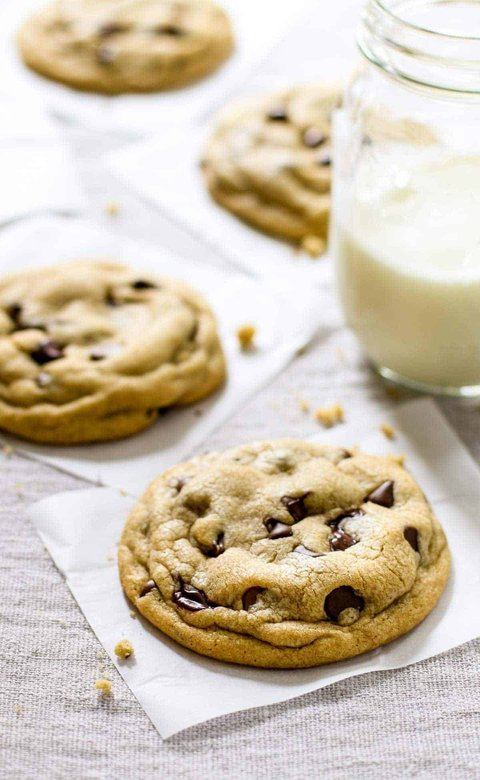

Home
Chocolate Chip Cookies

Ingredients
- 8 tablespoons of salted butter
- 1/2 cup white sugar (I like to use raw cane sugar with a coarser texture)
- 1/4 cup packed light brown sugar
- 1 teaspoon vanilla
- 1 egg
- 1 1/2 cups all purpose flour
- 1/2 teaspoon baking soda
- 1/4 teaspoon salt
- 3/4 cup chocolate chips
Instructions
- Preheat the oven to 350 degrees. Microwave the butter for about 40 seconds to just barely melt it. It shouldn’t be hot – but it should be almost entirely in liquid form.
- Using a stand mixer or electric beaters, beat the butter with the sugars until creamy. Add the vanilla and the egg; beat on low speed until just incorporated – 10-15 seconds or so (if you beat the egg for too long, the cookies will be stiff).
- Add the flour, baking soda, and salt. Mix until crumbles form. Use your hands to press the crumbles together into a dough. It should form one large ball that is easy to handle (right at the stage between “wet” dough and “dry” dough). Add the chocolate chips and incorporate with your hands.
- Roll the dough into 12 large balls (or 9 for HUGELY awesome cookies) and place on a cookie sheet. Bake for 9-11 minutes until the cookies look puffy and dry and just barely golden.
- Let them cool on the pan for a good 30 minutes or so